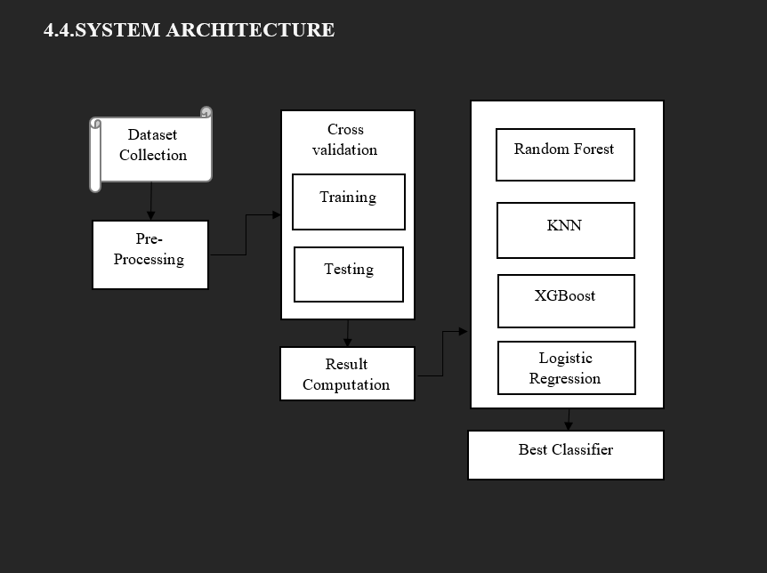
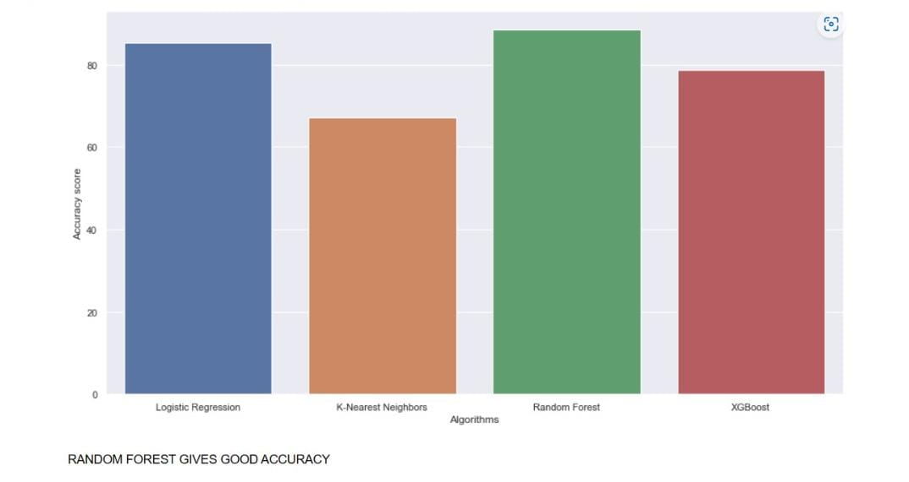

Cardiovascular Attack Prediction Using Machine Learning Techniques
This was a project we started back in November 2022. This is a group project with team of 4 Members.
We mainly used python functions and Machine Learning Algorthims.
we used 4 Machine Learning Algorthims 1.Logistic Regression 2.KNN 3.Random forest 4.XGBoost.
When compare to 4 Different Algorthims Random forest Algorthim produce high accuracy i.e 87% .
To save the patient time we implemented this project we took several inputs from the patient and save the data into a file and apply to the code to get accuracy.
Technologies:
- - python
- - Machine Learning Algorthims
Architecture

Graph
